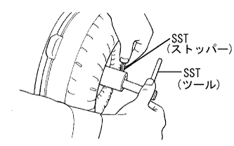
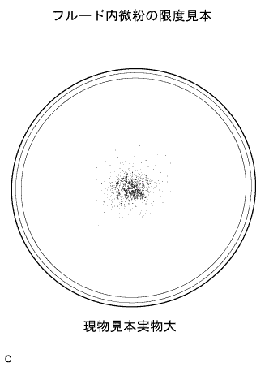
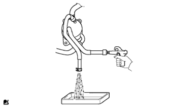
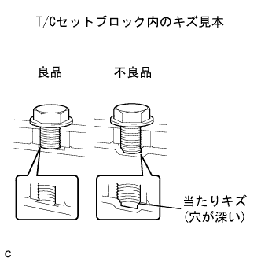
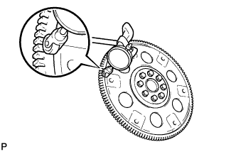

Torque Converter & Drive Plate Inspection |
| 1. Inspect Torque Converter Assembly |
Inspect Torque Converter One-way Clutch
 |
Insert SST (tool) into the stator shaft engagement area.
Insert SST (stopper) from the sleeve of the torque converter and engage it with the notch of the stator thrust washer.
Stand the torque converter assembly upright and turn SST (tool).
Torque Converter Assembly Acceptance Judgment
 |
If the inspection results of the torque converter assembly correspond to the criteria, replace the torque converter assembly.
Replace Fluid in Torque Converter
If the fluid has an abnormal odor or is discolored, thoroughly stir the fluid in the torque converter and drain it with the installation surface facing up.
Clean and Inspect Oil Cooler and Oil Pipe Lines
 |
If the torque converter assembly has been inspected or the fluid replaced, clean the oil cooler and pipe lines.
If the fluid is milky, inspect the oil cooler.
Preventing Torque Converter Deformation and Oil Pump Gear Damage
 |
If there are interference marks between the tip of a torque converter installation bolt and the bottom of the torque converter installation hole, replace the bolts and torque converter.
All installation bolts must be the same length (difference within 0.5mm) (no spring washers missing).
| 2. Inspect Drive Plate & Ring Gear Sub-assembly |
Inspect Drive Plate
 |
Using a dial indicator, inspect the drive plate runout.
Inspect Ring Gear
Inspect the ring gear for damage.